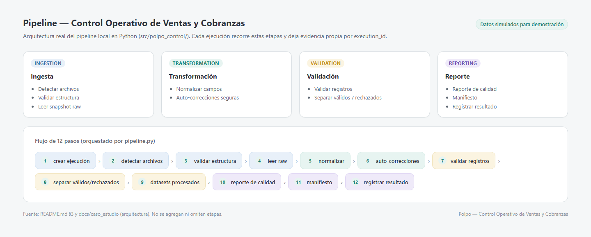
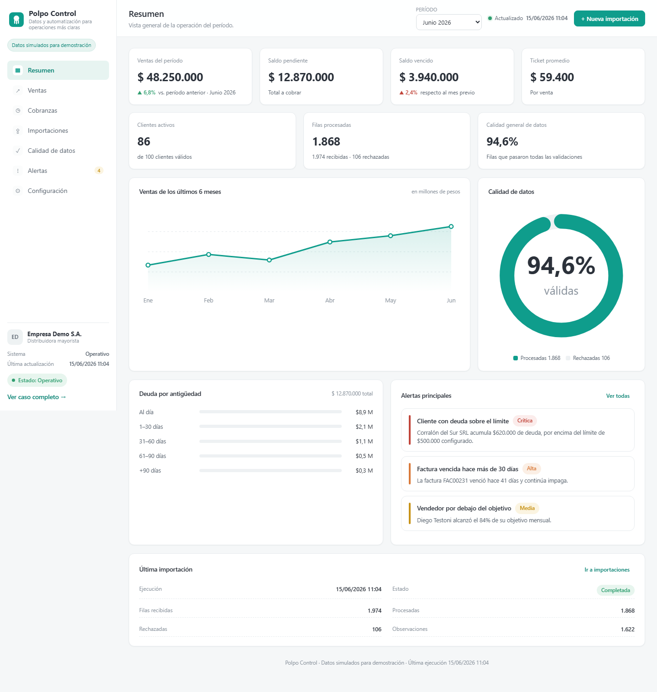
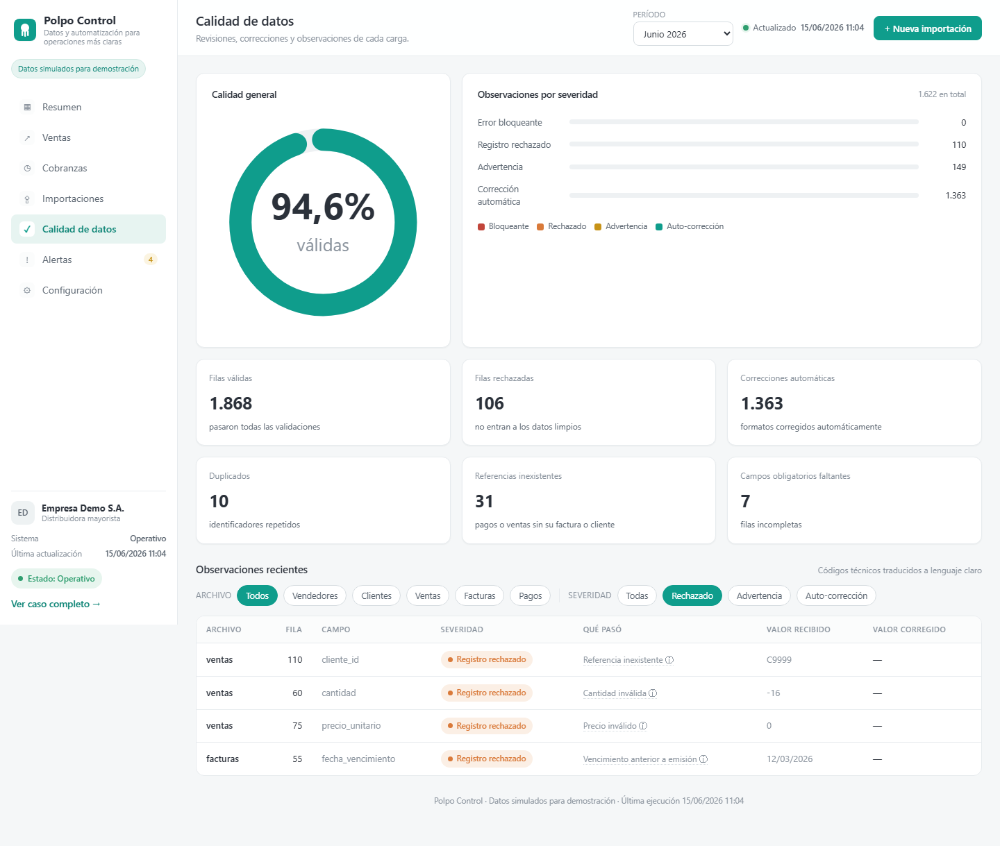
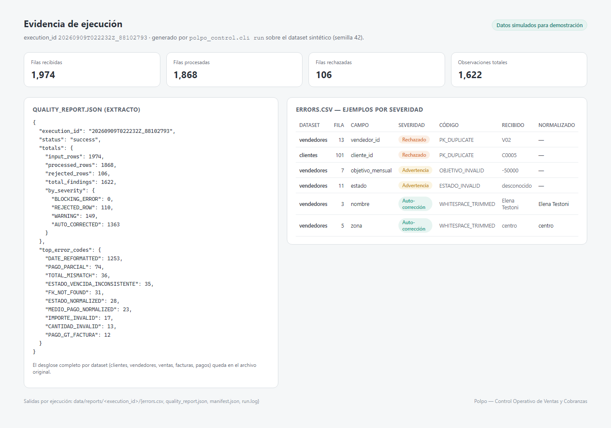

La ejecución está separada en etapas con responsabilidades explícitas.
El núcleo vive en un paquete Python y no en un notebook. pipeline.py orquesta detección de archivos, validación estructural, lectura raw, normalización, reglas por dataset, validaciones cruzadas y generación de salidas.
Cada corrida recibe un execution_id propio y escribe sus artefactos en directorios separados.

Las reglas se aplican sobre cinco datasets que comparten claves y dependencias.

Cada hallazgo tiene una severidad y un efecto definido sobre el dato.
Archivo faltante, columna requerida ausente o fuente ilegible. Se bloquea ese dataset, no necesariamente toda la ejecución.
La fila no pasa a processed. Aplica a PK faltante/duplicada, FK inexistente, fechas o importes inválidos, entre otros.
La fila sigue siendo utilizable y se conserva, pero el hallazgo queda registrado.
Corrección determinística y segura, registrando el valor recibido y el normalizado.
La severidad no se decide sólo por formato. Por ejemplo, un CUIT inválido se conserva como advertencia porque la clave operativa es cliente_id; una factura vencida marcada como pendiente también se advierte en lugar de cambiar su estado automáticamente, porque eso implicaría una inferencia de negocio.

Las autocorrecciones se aplican antes de validar y quedan registradas.
La arquitectura unifica la etapa de normalización con las autocorrecciones seguras: no existe una segunda fase que modifique datos después de validar sin dejar evidencia.
Processed y rejected son sólo una parte de la salida.
__reject_reasons__.
El dataset sintético inyecta errores mediante reglas explícitas.
La corrida documentada registra 1.363 autocorrecciones y 149 advertencias, sin errores bloqueantes. Un hallazgo no equivale necesariamente a una fila: un mismo registro puede acumular más de una observación.
El generador usa semilla fija y reglas de inyección por índice de fila. La evidencia definitiva de cada corrida es la salida real del pipeline, no el número teórico de errores inyectados.
La demo puede regenerarse y volver a procesarse desde CLI.
Los tests cubren detección de archivos y columnas faltantes, normalización, duplicados, claves foráneas inválidas, totales de venta, pagos contra facturas, separación de válidos/rechazados y generación del manifiesto.
01 Modelo de datos y relaciones entre cinco fuentes.02 Generador sintético reproducible con semilla fija.03 Motor de normalización y validación por severidades.04 Validaciones cruzadas entre datasets.05 Salidas, reporte de calidad y manifiesto por ejecución.06 CLI y suite de tests automatizados.Este proyecto es demostrativo. Los datasets, empresas, personas, CUIT, localidades y resultados publicados son sintéticos. PostgreSQL, Power BI y n8n aparecen en el roadmap del repositorio, pero no forman parte del pipeline implementado en esta etapa.
Interfaz visual sobre la misma corrida sintética documentada en este proyecto.
Abrir demo ↗ Volver a proyectos